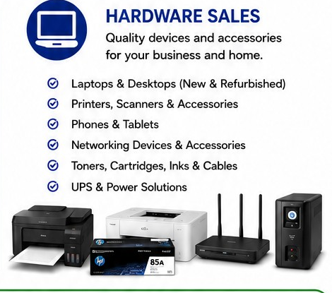
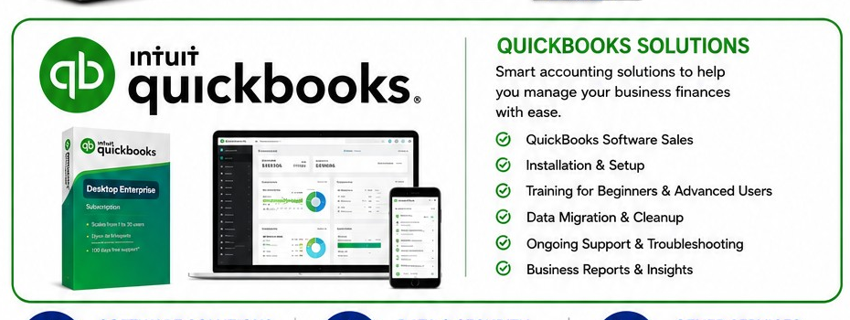
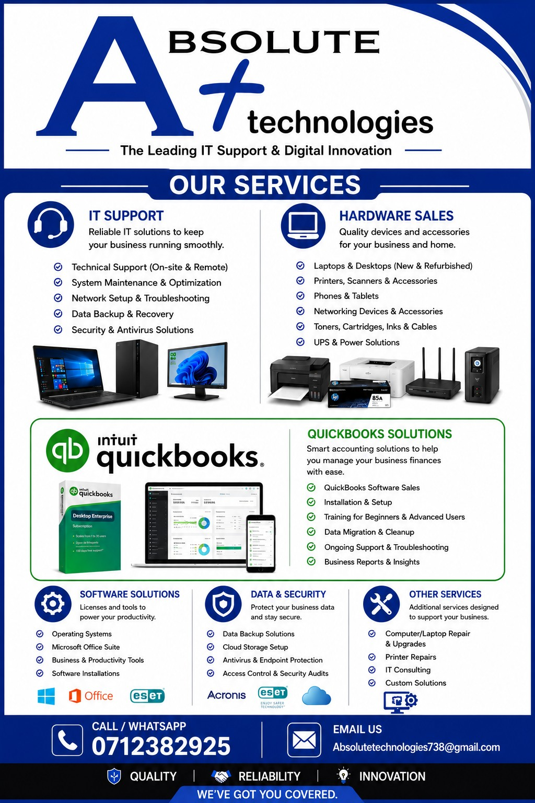

IT Support
Technical support, troubleshooting, system maintenance, optimization, network setup, data backup and antivirus solutions.
Complete IT support, hardware, software, QuickBooks, security and repair solutions.


Technical support, troubleshooting, system maintenance, optimization, network setup, data backup and antivirus solutions.
Laptops, desktops, printers, scanners, accessories, phones, tablets, networking devices, cartridges, cables and UPS solutions.
QuickBooks software sales, installation and setup, training for beginners and advanced users, data migration, cleanup and ongoing support.
Operating systems, Microsoft Office, business and productivity tools, antivirus and other software installations.
Data backup, recovery, cloud storage, antivirus and endpoint protection, access control and security support.
Computer and laptop repairs, upgrades, printer repairs, IT consulting and custom technology solutions.
